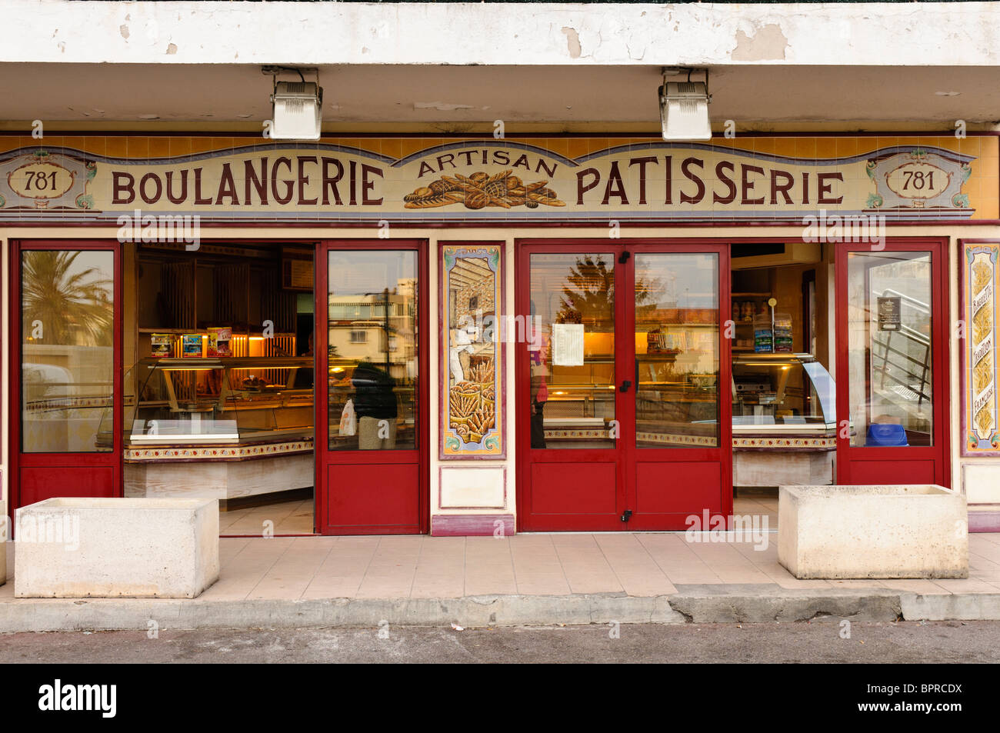
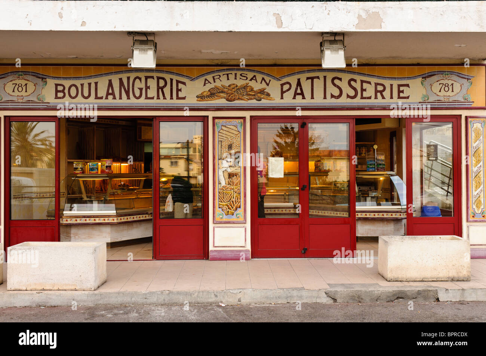
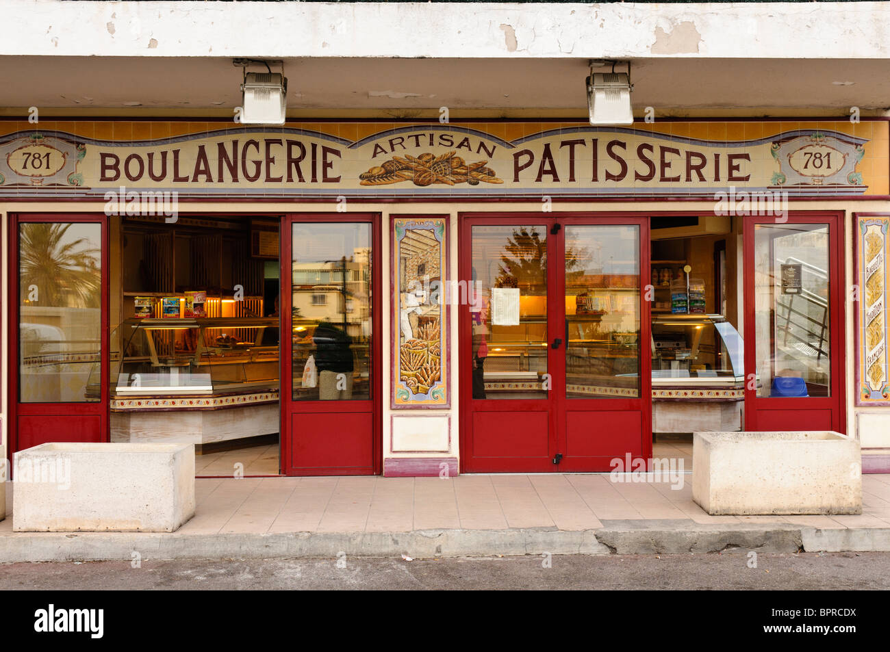

25 rue baguette, 59000 Lille
 

Monsieur Farine
25 rue baguette, 59000 Lille

Je me présente, Monsieur Farine et voici ma boulangerie située à
Lille.
Etant dans le métier depuis maintenant plusieures années j'ai
décidé d'ouvrir ma propre boulangerie.
De la spécialité lilloise à la patisserie orientale, il y en aura pour
tous les goûts!
N'hésitez pas à laisser un avis après votre passage
😘